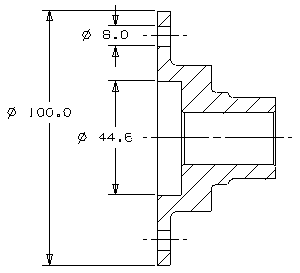
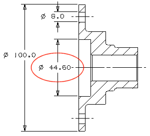

Add cylindrical dimensions and edit them
-
On the section view, dimension these cylindrical diameters: the flange, the bolt hole at the top of this view, and the counterbore.
-
Use one place precision.
-
Line up the inner dimensions as you create them.
-
Optional: Use only the End Point
 to select your geometry.
to select your geometry.

-
-
Edit the cylindrical dimension of the counterbore to show two place precision.
If necessary, move the changed dimension to a better location.
